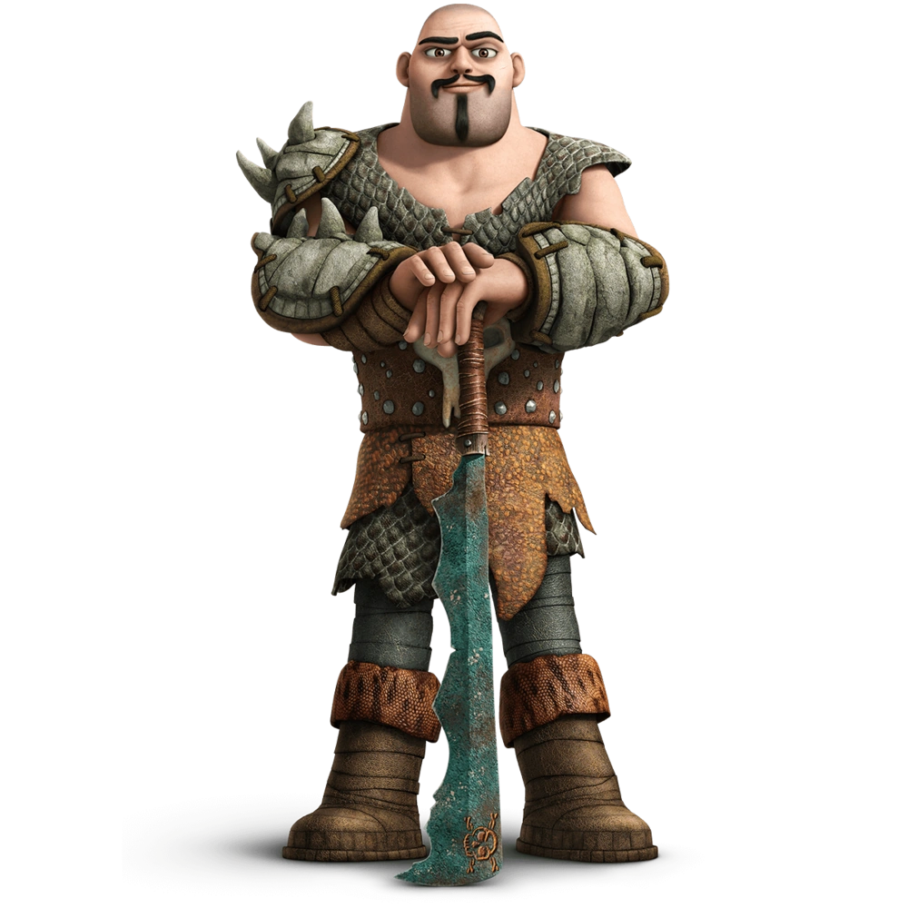

Chef des chasseurs de dragons, muscle des Grimborn
| Rôle | Chef des chasseurs de dragons |
| Affiliation | Chasseurs de dragons (frère de Viggo) |
| Particularité | Frère aîné musclé du duo Grimborn |
Ryker Grimborn est le bras armé du duo de frères Grimborn. Pendant que Viggo planifie, Ryker exécute avec une brutalité efficace. Chef des chasseurs de dragons, il commerce illégalement avec ces créatures et n'hésite pas à recourir à la violence pour arriver à ses fins. Sa force brute et son absence de scrupules en font un adversaire redoutable.